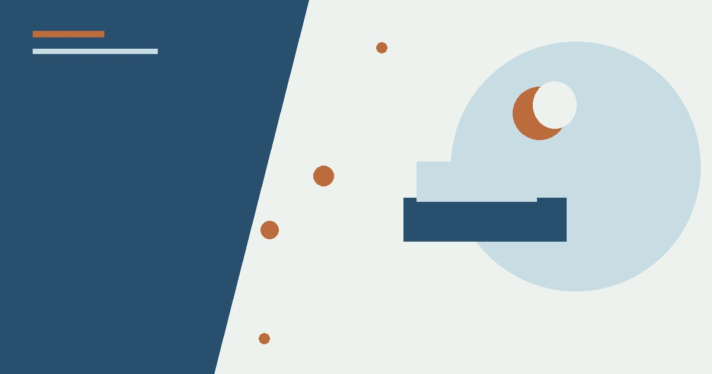
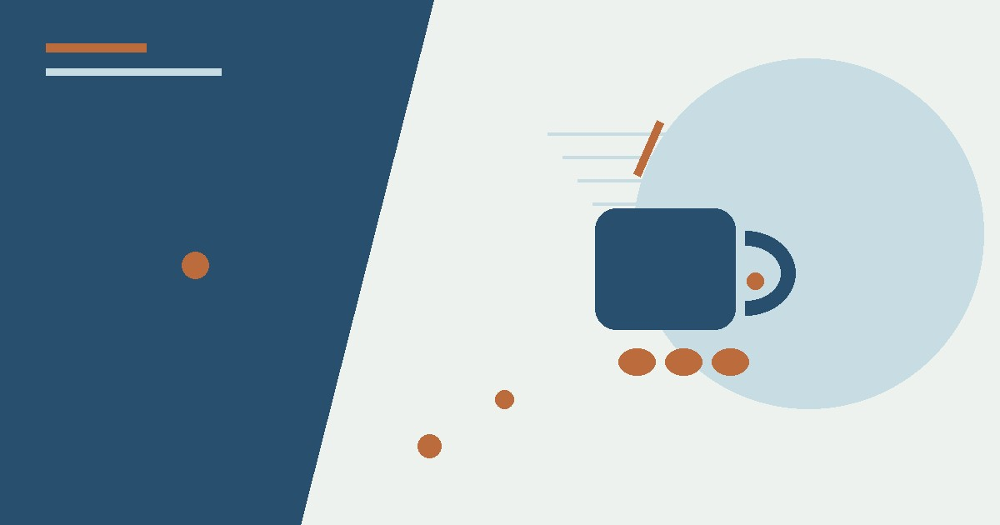

معلومات عامة
حقائق مبسطة عن جسم الإنسان: القلب والعظام والجلد والدماغ
حقائق مدهشة وممتعة عن جسم الإنسان: القلب، العظام، الجلد، الدماغ، والمعدة — معلومات علمية مبسطة تثير الدهشة.
حقائق مدهشة عن الماء: نسبة الماء في جسم الإنسان، الماء الصالح للشرب، دورة الماء، ولماذا الماء ضروري للحياة — معلومات مبسطة.

معظم ماء الأرض مالح، وجزء كبير من الماء العذب محجوز في الجليد أو تحت الأرض. نسبة الماء المتاحة للاستخدام تتغير بحسب تعريف «المتاح» والمنطقة والبنية التحتية؛ لذلك تجنب تحويل رقم عالمي واحد إلى وصف لوضع كل بلد.
سلامة الماء ترتبط بالمصدر والمعالجة والتخزين. لا يمكن الحكم على صلاحية الماء من اللون أو الرائحة وحدهما، وعند الشك اتبع تعليمات الجهة المحلية المسؤولة عن المياه والصحة.
نشرب الماء كل يوم دون تفكير، لكنه في الحقيقة أكثر السوائل غرابة على وجه الأرض. إنه المادة الوحيدة التي توجد طبيعيًا في الحالات الثلاث (سائل، صلب، غاز)، وهو أساس كل أشكال الحياة المعروفة. إليك حقائق مدهشة عن السائل الذي قد نعتبره عاديًا بينما هو الأعجوبة الحقيقية.
جسم الإنسان يتكون من حوالي 60% ماء، لكن النسبة تختلف بين الأعضاء: الدماغ 75% ماء، الرئتان 83%، العضلات 75%، وحتى العظام تحتوي على 31% ماء. بدون الماء لا يمكن لجسمك تنظيم حرارته، أو نقل الغذاء، أو التخلص من السموم. يمكن للإنسان أن يعيش أسابيع بدون طعام، لكن أيامًا فقط بدون ماء.
الماء يغطي حوالي 71% من سطح الأرض، لكن هذا الرقم مضلل: 97% من مياه الأرض مالح في المحيطات، و2% متجمد في القطبين والأنهار الجليدية. النتيجة: أقل من 1% من مياه الأرض صالح للشرب والزراعة مباشرة. هذا «الماء العذب» القليل موزع في الأنهار والبحيرات والمياه الجوفية — وهو ما يعتمد عليه أكثر من 8 مليارات إنسان.
الماء الذي تشربه اليوم هو نفسه الماء الذي شربه الفراعنة والإمبراطوريات القديمة. لأن الماء في دورة مستمرة: يتبخر من المحيطات والبحيرات بفعل الشمس، يتكاثف في الغيوم، ويهطل مطرًا أو ثلجًا، ثم يعود عبر الأنهار إلى المحيطات. كل قطرة ماء على الأرض عمرها مليارات السنين، وستبقى هنا بعدنا.
القاعدة الشائعة «8 أكواب يوميًا» تقريبية وليست دقيقة علميًا؛ الحاجة تختلف حسب الوزن والطقس والنشاط. الإرشاد العملي: اشرب عندما تشعر بالعطش، وافحص لون البول (الأصفر الفاتح = ترطيب جيد، الداكن = تحتاج ماء). في الأجواء الحارة أو أثناء الرياضة، زد الكمية. والفواكه والخضار تزودك أيضًا بنسبة جيدة من حاجتك اليومية.
الماء ليس مجرد مشروب نطفئ به العطش؛ إنه شريان الحياة الذي يربط كل شيء: جسمك، كوكبك، وطعامك. في المرة القادمة التي تفتح فيها الصنبور، تذكر أنك أمام معجزة عمرها مليارات السنين — وأمام مسؤولية الحفاظ عليها.
رُوجعت المعلومات العامة في هذا المقال بالاستناد إلى المصادر التالية. الروابط الخارجية قد تُحدّث محتواها بمرور الوقت.
حقائق مدهشة وممتعة عن جسم الإنسان: القلب، العظام، الجلد، الدماغ، والمعدة — معلومات علمية مبسطة تثير الدهشة.

لماذا نحتاج النوم؟ مراحل النوم، فوائده للذاكرة والمناعة، مخاطر الحرمان من النوم، ونصائح علمية لنوم أفضل وأعمق.

تاريخ القهوة في اليمن: من أصل البن في إثيوبيا إلى زراعته وتجارته في اليمن ودور ميناء المخا في انتشار القهوة عالميًا.